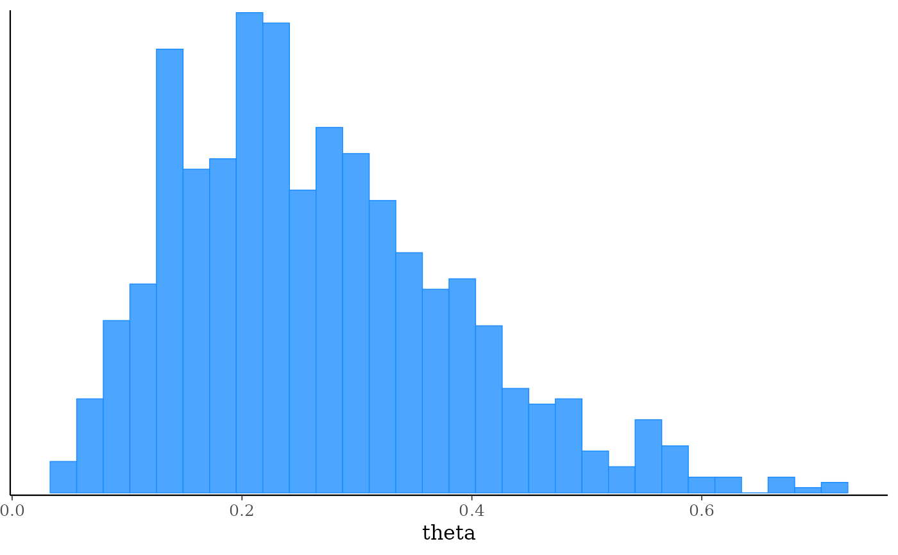

The $laplace() method of a CmdStanModel object produces a
sample from a normal approximation centered at the mode of a distribution
in the unconstrained space. If the mode is a maximum a posteriori (MAP)
estimate, the samples provide an estimate of the mean and standard
deviation of the posterior distribution. If the mode is a maximum
likelihood estimate (MLE), the sample provides an estimate of the standard
error of the likelihood. Whether the mode is the MAP or MLE depends on
the value of the jacobian argument when running optimization. See the
CmdStan User’s Guide
for more details.
Any argument left as NULL will default to the default value used by the
installed version of CmdStan.
Usage
laplace(
data = NULL,
seed = NULL,
refresh = NULL,
init = NULL,
save_latent_dynamics = FALSE,
output_dir = getOption("cmdstanr_output_dir"),
output_basename = NULL,
sig_figs = NULL,
threads = NULL,
opencl_ids = NULL,
mode = NULL,
opt_args = NULL,
jacobian = TRUE,
draws = NULL,
show_messages = TRUE,
show_exceptions = TRUE,
save_cmdstan_config = NULL
)Arguments
- data
(multiple options) The data to use for the variables specified in the data block of the Stan program. One of the following:
A named list of R objects with the names corresponding to variables declared in the data block of the Stan program. Internally this list is then written to JSON for CmdStan using
write_stan_json(). Seewrite_stan_json()for details on the conversions performed on R objects before they are passed to Stan.A path to a data file compatible with CmdStan (JSON or R dump). See the appendices in the CmdStan guide for details on using these formats.
NULLor an empty list if the Stan program has no data block.
- seed
(positive integer(s)) A seed for the (P)RNG to pass to CmdStan. In the case of multi-chain sampling the single
seedwill automatically be augmented by the the run (chain) ID so that each chain uses a different seed. The exception is the transformed data block, which defaults to using same seed for all chains so that the same data is generated for all chains if RNG functions are used. The only timeseedshould be specified as a vector (one element per chain) is if RNG functions are used in transformed data and the goal is to generate different data for each chain.- refresh
(non-negative integer) The number of iterations between printed screen updates. If
refresh = 0, only error messages will be printed.- init
(multiple options) The initialization method to use for the variables declared in the parameters block of the Stan program. One of the following:
A real number
x>0. This initializes all parameters randomly between[-x,x]on the unconstrained parameter space.;The number
0. This initializes all parameters to0;A character vector of paths (one per chain) to JSON or Rdump files containing initial values for all or some parameters. See
write_stan_json()to write R objects to JSON files compatible with CmdStan.A list of lists containing initial values for all or some parameters. For MCMC the list should contain a sublist for each chain. For other model fitting methods there should be just one sublist. The sublists should have named elements corresponding to the parameters for which you are specifying initial values. See Examples.
A function that returns a single list with names corresponding to the parameters for which you are specifying initial values. The function can take no arguments or a single argument
chain_id. For MCMC, if the function has argumentchain_idit will be supplied with the chain id (from 1 to number of chains) when called to generate the initial values. See Examples.A
CmdStanMCMC,CmdStanMLE,CmdStanVB,CmdStanPathfinder, orCmdStanLaplacefit object. If the fit object's parameters are only a subset of the model parameters then the other parameters will be drawn by Stan's default initialization. The fit object must have at least some parameters that are the same name and dimensions as the current Stan model. For thesampleandpathfindermethod, if the fit object has fewer draws than the requested number of chains/paths then the inits will be drawn using sampling with replacement. Otherwise sampling without replacement will be used. When aCmdStanPathfinderfit object is used as the init, if .psis_resamplewas set toFALSEandcalculate_lpwas set toTRUE(default), then resampling without replacement with Pareto smoothed weights will be used. Ifpsis_resamplewas set toTRUEorcalculate_lpwas set toFALSEthen sampling without replacement with uniform weights will be used to select the draws. PSIS resampling is used to select the draws forCmdStanVB, andCmdStanLaplacefit objects.A type inheriting from
posterior::draws. If the draws object has less samples than the number of requested chains/paths then the inits will be drawn using sampling with replacement. Otherwise sampling without replacement will be used. If the draws object's parameters are only a subset of the model parameters then the other parameters will be drawn by Stan's default initialization. The fit object must have at least some parameters that are the same name and dimensions as the current Stan model.
- save_latent_dynamics
Ignored for this method.
- output_dir
(string) A path to a directory where CmdStan should write its output CSV files. For MCMC there will be one file per chain; for other methods there will be a single file. For interactive use this can typically be left at
NULL(temporary directory) since CmdStanR makes the CmdStan output (posterior draws and diagnostics) available in R via methods of the fitted model objects. This can be set for an entire R session usingoptions(cmdstanr_output_dir). The behavior ofoutput_diris as follows:If
NULL(the default), then the CSV files are written to a temporary directory and only saved permanently if the user calls one of the$save_*methods of the fitted model object (e.g.,$save_output_files()). These temporary files are removed when the fitted model object is garbage collected (manually or automatically).If a path, then the files are created in
output_dirwith names corresponding to the defaults used by$save_output_files().
- output_basename
(string) A string to use as a prefix for the names of the output CSV files of CmdStan. If
NULL(the default), the basename of the output CSV files will be comprised from the model name, timestamp, and 5 random characters.- sig_figs
(positive integer) The number of significant figures used when storing the output values. By default, CmdStan represent the output values with 6 significant figures. The upper limit for
sig_figsis 18. Increasing this value will result in larger output CSV files and thus an increased usage of disk space.- threads
(positive integer) If the model was compiled with threading support, the number of threads to use in parallelized sections (e.g., when using the Stan functions
reduce_sum()ormap_rect()).- opencl_ids
(integer vector of length 2) The platform and device IDs of the OpenCL device to use for fitting. The model must be compiled with
cpp_options = list(stan_opencl = TRUE)for this argument to have an effect.- mode
(multiple options) The mode to center the approximation at. One of the following:
A
CmdStanMLEobject from a previous run of$optimize().The path to a CmdStan CSV file from running optimization.
NULL, in which case $optimize() will be run withjacobian=jacobian(see thejacobianargument below).
In all cases the total time reported by
$time()will be the time of the Laplace sampling step only and does not include the time taken to run the$optimize()method.- opt_args
(named list) A named list of optional arguments to pass to $optimize() if
mode=NULL.- jacobian
(logical) Whether or not to enable the Jacobian adjustment for constrained parameters. The default is
TRUE. See the Laplace Sampling section of the CmdStan User's Guide for more details. Ifmodeis notNULLthen the value ofjacobianmust match the value used when optimization was originally run. IfmodeisNULLthen the value ofjacobianspecified here is used when running optimization.- draws
(positive integer) The number of draws to take.
- show_messages
(logical) When
TRUE(the default), prints all output during the execution process, such as iteration numbers and elapsed times. If the output is silenced then the$output()method of the resulting fit object can be used to display the silenced messages.- show_exceptions
(logical) When
TRUE(the default), prints all informational messages, for example rejection of the current proposal. Disable if you wish to silence these messages, but this is not usually recommended unless you are very confident that the model is correct up to numerical error. If the messages are silenced then the$output()method of the resulting fit object can be used to display the silenced messages.- save_cmdstan_config
(logical) When
TRUE(the default), call CmdStan with argument"output save_config=1"to save a json file which contains the argument tree and extra information (equivalent to the output CSV file header). This option is only available in CmdStan 2.34.0 and later.
Value
A CmdStanLaplace object.
See also
The CmdStanR website (mc-stan.org/cmdstanr) for online documentation and tutorials.
The Stan and CmdStan documentation:
Stan documentation: mc-stan.org/users/documentation
CmdStan User’s Guide: mc-stan.org/docs/cmdstan-guide
Other CmdStanModel methods:
model-method-check_syntax,
model-method-compile,
model-method-diagnose,
model-method-expose_functions,
model-method-format,
model-method-generate-quantities,
model-method-optimize,
model-method-pathfinder,
model-method-sample,
model-method-sample_mpi,
model-method-variables,
model-method-variational
Examples
# \dontrun{
file <- file.path(cmdstan_path(), "examples/bernoulli/bernoulli.stan")
mod <- cmdstan_model(file)
mod$print()
#> data {
#> int<lower=0> N;
#> array[N] int<lower=0, upper=1> y;
#> }
#> parameters {
#> real<lower=0, upper=1> theta;
#> }
#> model {
#> theta ~ beta(1, 1); // uniform prior on interval 0,1
#> y ~ bernoulli(theta);
#> }
stan_data <- list(N = 10, y = c(0,1,0,0,0,0,0,0,0,1))
fit_mode <- mod$optimize(data = stan_data, jacobian = TRUE)
#> Initial log joint probability = -15.9648
#> Iter log prob ||dx|| ||grad|| alpha alpha0 # evals Notes
#> 5 -6.74802 0.00187752 5.64457e-05 1 1 8
#> Optimization terminated normally:
#> Convergence detected: relative gradient magnitude is below tolerance
#> Finished in 0.1 seconds.
fit_laplace <- mod$laplace(data = stan_data, mode = fit_mode)
#> Calculating Hessian
#> Calculating inverse of Cholesky factor
#> Generating draws
#> iteration: 0
#> iteration: 100
#> iteration: 200
#> iteration: 300
#> iteration: 400
#> iteration: 500
#> iteration: 600
#> iteration: 700
#> iteration: 800
#> iteration: 900
#> Finished in 0.1 seconds.
fit_laplace$summary()
#> # A tibble: 3 × 7
#> variable mean median sd mad q5 q95
#> <chr> <dbl> <dbl> <dbl> <dbl> <dbl> <dbl>
#> 1 lp__ -7.23 -6.97 0.688 0.295 -8.57 -6.75
#> 2 lp_approx__ -0.495 -0.220 0.732 0.301 -1.94 -0.00358
#> 3 theta 0.263 0.246 0.121 0.121 0.101 0.491
# if mode isn't specified optimize is run internally first
fit_laplace <- mod$laplace(data = stan_data)
#> Initial log joint probability = -6.77661
#> Iter log prob ||dx|| ||grad|| alpha alpha0 # evals Notes
#> 4 -6.74802 0.00012451 3.01958e-07 1 1 7
#> Optimization terminated normally:
#> Convergence detected: relative gradient magnitude is below tolerance
#> Finished in 0.1 seconds.
#> Calculating Hessian
#> Calculating inverse of Cholesky factor
#> Generating draws
#> iteration: 0
#> iteration: 100
#> iteration: 200
#> iteration: 300
#> iteration: 400
#> iteration: 500
#> iteration: 600
#> iteration: 700
#> iteration: 800
#> iteration: 900
#> Finished in 0.1 seconds.
fit_laplace$summary()
#> # A tibble: 3 × 7
#> variable mean median sd mad q5 q95
#> <chr> <dbl> <dbl> <dbl> <dbl> <dbl> <dbl>
#> 1 lp__ -7.25 -6.98 0.716 0.314 -8.64 -6.75
#> 2 lp_approx__ -0.515 -0.236 0.724 0.324 -2.05 -0.00159
#> 3 theta 0.268 0.249 0.125 0.124 0.0970 0.504
# plot approximate posterior
bayesplot::mcmc_hist(fit_laplace$draws("theta"))
#> `stat_bin()` using `bins = 30`. Pick better value `binwidth`.

# }